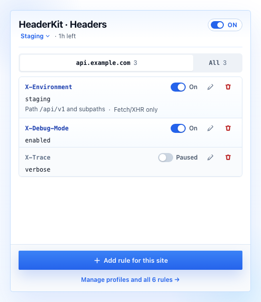

Switch the environment, keep the context.
Store staging, QA, and development rules in separate profiles. Keep one profile active and see its rules grouped by exact host.
Test APIs with exact-host rules, environment profiles, and automatic expiry. All from one small Chrome extension.

Switch profiles, review rules by hostname, and choose when active rules stop.
Store staging, QA, and development rules in separate profiles. Keep one profile active and see its rules grouped by exact host.
Apply rules to an approved HTTPS host. Narrow them with a path prefix or fetch/XHR matching.
Choose one hour, eight hours, or Chrome shutdown. Pause rules at any time without deleting the setup.

Open the popup to review, add, edit, or pause headers for the site being tested. Move to the rule manager when the wider setup needs attention.
Create the first ruleNo account. No analytics. No developer uploads. Rules and header values stay in the local Chrome profile. Active headers reach matching destinations and may appear in their logs.
Read the privacy policyCreate exact-host rules. Scope API paths or fetch/XHR requests. Verify in DevTools.

Separate staging and QA headers. Switch profiles without retyping values.
Set one-hour, eight-hour, or browser-session expiry. Keep rules saved for later tests.

Request headers on approved HTTPS hosts. HeaderKit does not edit response headers, inspect response bodies, or bypass CORS.
Grant exact-host access when adding a rule. Review and revoke site permissions through Site access.
Choose one hour, eight hours, or Chrome shutdown. Manual shutoff is also available.
Clone the
GitHub repository
, open
chrome://extensions
, enable Developer mode, choose
Load unpacked
, and select the
extension
directory.
Free. Local settings. Chrome 120 or later.